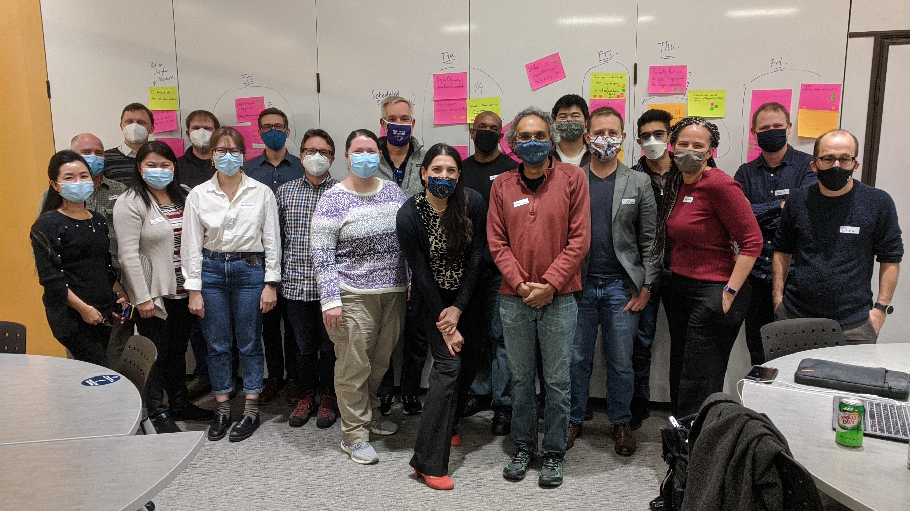
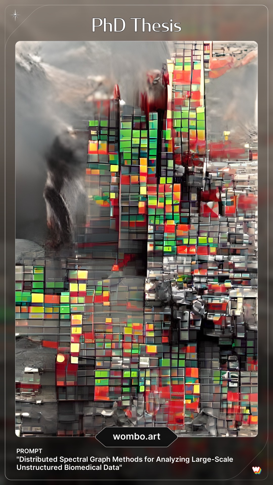

I’m not sure where I should even start. How does one sum up a year that felt more like a decade? How does one reflect on a year that eschewed reflection in favor of mere survival?
I want to be the eternal optimist who always sees the silver lining, who always takes away something positive from a negative experience. But to paraphrase (because I can’t find it) someone far more clever than I on Twitter: it feels a bit like trying to find the bright side of things while actively being run over by a zamboni.
Well, I suppose one way would be to try and end this post on a positive note. So to that end, I’ll start with the stuff that sucked in 2021.
The Bad
Where do I even start? The pandemic continued to rage–Alpha, Delta, and Omicron right at the cusp of the new year–and elected leaders around the globe shrugged their collective shoulders, as if saying “we tried nothing and it didn’t work, so I guess that’s it.”
University of Georgia, in lockstep with the Georgia Board of Regents and many other public universities across the country, collectively threw up their hands, hid behind the malevolent cowardice of our elected leaders, and did all of jack and shit to protect any of the hundreds of thousands of dedicated public service workers who have given 140% of themselves to the institution of higher learning since time immemorial. They continued to fart out meaningless platitudes about “rallying together” whenever another surge arrived but refused to take any meaningful or substantive actions recommended by public health experts the world over–like requiring masks or vaccinations–and instead demanded more of already overtaxed, underpaid janitorial staff to do more pointless bullshit like installing platic dividers or cleaning surfaces forty times a day.
Running has continued to be an elusive outlet for stress. Every run feels hard, and more often than not I’m inclined to not run. Which doesn’t do anything to help my mood, but that vicious negative feedback loop continues nonetheless. I hate it but I’m not sure how to break out of it.
Other shit that sucked:
- Our bun Clover had a bout of GI stasis in the early part of the year. Thankfully, the folks at the UGA Vet Hospital were amazing in getting her well again. Still, scary as shit.
- the weather (75F on Christmas? fucking really?)
- teaching (and I hate that I hated it, but I’m so, so burned out)
- literally the Georgia Board of Regents
- annual grant reports (best I can describe is we’re running in place)
- burnout in general
- mental health in general
- every day being a series of bad choices made from a list of exclusively bad choices
The Good
Somehow, through the grace of God and possibly every deity in the multiverse, we have not tested positive for COVID (knocks on wood).
I took my first flight since Dec 2019 to Washington, D.C., for a workshop hosted at George Washington University on teaching with open source technology. It was a blast. Not only was it an absolute pleasure to spend a few days with some of my professional heroes, folks I’ve known for years through Twitter and who share my same passion for open source technology and innovative instrucitonal methods, but it was great just going to a meeting again!

Traveling was the strangest thing, both familiar and foreign. Of course I was a nervous wreck going through the airport, but I commend everyone at GWU for taking every precaution, including mandating the use of masks indoors. It was also the first time either one of us single-parented for more than a few hours at a time, and Cathryn did amazingly well! She even managed Z’s weekly bath ON HER OWN.

I was tenured and promoted. Indeed, I somehow won the cosmic coin flip. I am now an Associate (“ass o’ shit”, in the technical parlance) Professor of Computer Science and Cellular Biology.

We bought a second car (named “Mipha”), a Honda CRV Hybrid, in the summer. We had assumed we’d need two cars, what with our jobs requiring slightly different hours and wildly different physical locations, it would entail too much logistical square dancing for a single car when daycare pickup / dropoff was added to the mix. Of course, then I taught the fall semester almost entirely remotely because of the Delta surge. Still, it’s been really nice to have a bit more room, and our handful of trips to the mountains with Z would absolutely NOT have been possible with Sam (our Honda Accord Hybrid). Not crazy about the added car insurance, though.
Over Christmas, we managed a trip to Arizona (which, in hindset, we may not have done given Omicron) for a family reunion on Cathryn’s side to celebrate her grandfather’s 101st birthday. It was also the first time Z had ever met the family on Cathryn’s side, and the first time she got to meet her great-grandfather, born a century earlier. We took rapid tests every day, and got PCR tested before and after, and somehow only 1 person in the entire extended family got COVID. It was also the first time Z traveled by airplane, and she was amazing. It was lovely. Exhausting, but lovely.

Other stuff that was neat and definitely didn’t suck:
- Our house won our HOA’s First Place for holiday decorations, specifically in the “whimsical” category! I’m thinking our 7-foot inflatable menorah had something to do with it.
- Both Cathryn and I hired running coaches to help us get back into the swing of things. Baby steps!
- I was offered–and accepted–a position with Quansight as Principal Solution Architect. I’ll have a lot more to say about this in a later post.
- Bathroom renovations are scheduled, and office renovations are being planned. All that’s left in the Priority A category is to address the outdoor flooding.
- We managed a handful of mountain trips with Z, and even one with our friend Laura. Z loooves the outdoors, which is awesome.
- I got this blog working again!
- Age of Calamity’s two expansion packs are fun as hell.
- Z is just… the singularity of joy in our lives.
Wrap Up

It’s cathartic to get all this out in some form. And, of course, there are innumerable positives (and negatives) that I’m forgetting / suppressing / ignoring. I will say this:
I’m genuinely excited for 2022. There’s an insane amount of uncertainty and dread and fear, but there are some changes in store for which I’m really and truly stoked. I just have to hope.
Citation
@online{quinn2022,
author = {Shannon Quinn},
title = {What the f*@\$ Is This s\%\#\& (2022 Ed.)},
date = {2022-01-05},
url = {https://magsol.github.io/2022-01-05-what-the-f-is-this-s},
langid = {en}
}